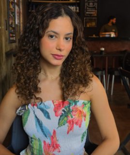

Você vai conversar com um idoso que acabou de conhecer. Use as cartas para começar, ouça mais do que fala e respeite se a pessoa não quiser responder.
Por que uma página e não só uma conversa?
Porque, quando você acabou de conhecer alguém, às vezes não sabe por onde começar. A carta é só o começo: a conversa continua com o que a pessoa responder.
As perguntas falam de lembranças, gostos e histórias, que costumam ser o que as pessoas mais gostam de contar. O assunto da doença fica de fora, porque no primeiro contato pode parecer um interrogatório.
A carta não faz a conversa sozinha. Quem faz é a presença de quem escuta.
Para quem é
Use as cartas para conversar em casa, num café ou no telefone. Pergunte sobre o passado e deixe a pessoa escolher o ritmo.
Como usar esta página
Um jeito simples de começar uma conversa.
- 1Sorteie uma cartaToque no botão e leia a pergunta em voz alta.
- 2Converse com calmaOuça sem corrigir e deixe a história fluir.
- 3Pule quando quiserNenhuma pergunta é obrigatória. Escolher outra também vale.
Cartas de conversa
Perguntas para lembrar, contar e compartilhar.
Toque em “Sortear carta” para começar.
Dica para quem pergunta: as cartas funcionam melhor quando a conversa flui sem pressa.
Ninguém é obrigado a responder. A conversa é voluntária.
Quando encaminhar
Converse com a equipe da UBS se a pessoa parecer muito triste, isolada ou confusa, ou se ela falar em não querer mais viver.
- UBS: equipe de saúde e agente comunitário de saúde, que conhece a família.
- CVV: apoio emocional 24 horas pelo 188, gratuito.
- Disque 100: denúncias de violência contra a pessoa idosa.
- Emergência: se houver risco imediato, ligue 192 (SAMU).
Este site não substitui atendimento de saúde.
Sobre o Aurora
Conversas simples que ajudam a cuidar da saúde mental de quem envelheceu.
O Aurora reúne escuta, acolhimento e orientação sobre a rede de apoio. Busca valorizar os vínculos, a autonomia e o bem-estar das pessoas idosas em diferentes contextos de cuidado.
O foco principal é a Unidade Básica de Saúde (UBS). Durante as visitas, as autoras viram muitos idosos esperando atendimento, e percebeu-se que, às vezes, uma conversa simples já melhora como eles se sentem. O Aurora quer levar essa escuta para dentro da UBS, de forma acolhedora e sem substituir o atendimento de saúde.
O projeto também nasceu do convívio das autoras com os próprios avós, e se aproxima das histórias, rotinas e necessidades desse público.
A escuta é voluntária, sigilosa e feita com linguagem simples.
Equipe
Estudantes de Medicina do Centro Universitário de Excelência ENIAC.

GabrielaArticulação e logística@gabrielarossato_

GiovannaMateriais e escuta@gvnn.rf
LetíciaIndicadores e registros@lisboa_lage
Orientação: Dr. Helder Ribeiro, médico de família e comunidade, CRM-SP 92391.